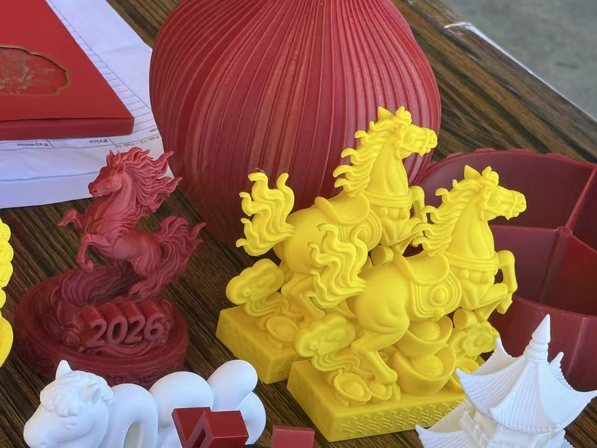
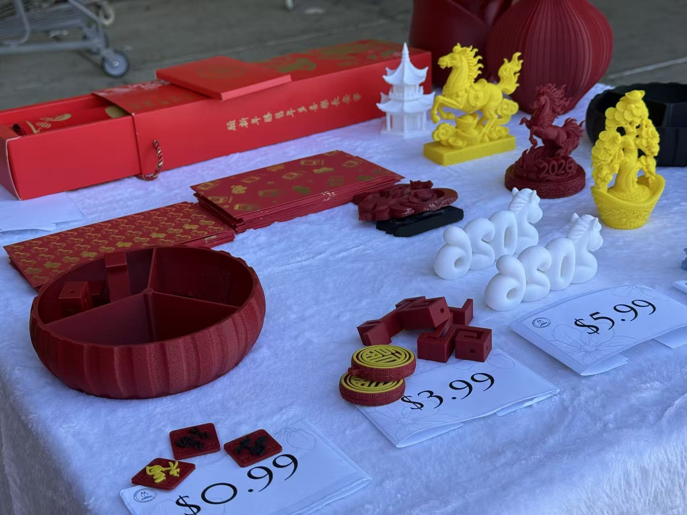
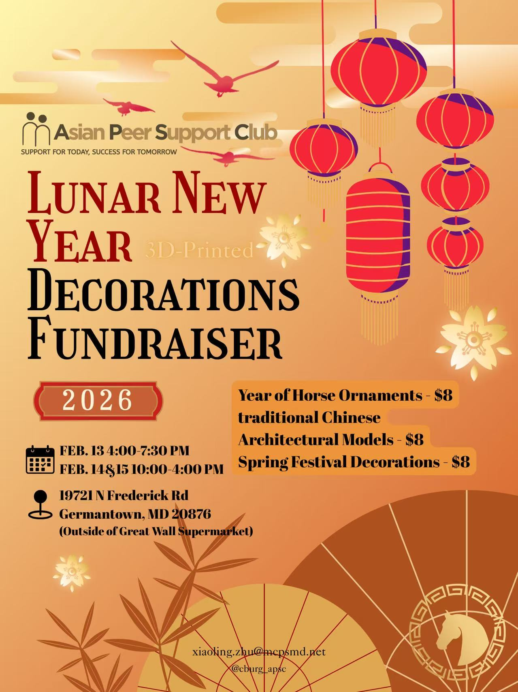

Spring Festival Decorations Fundraiser

Power of Community
In order to provide more support events and cultural activities for our community, we organized a Spring Festival Decorations Fundraiser in February 2026. We would like to express our sincere gratitude to all the students, parents, and staff who contributed to the success of the event. Through the fundraiser, we were able to raise enough funds for our upcoming cultural events, and peer support activities. More importantly, the event served as a wonderful opportunity for our community to come together, celebrate our shared values, and strengthen the bonds that make our club so special. We look forward to creating more memorable experiences together in the future.


Why This Event Matters
Through the event, members of our club worked together to make it a success. From the initial planning stages to the contact for collaboration, and the final execution, everyone contributed their time, effort, and creativity to make the event a memorable one. The decorations we created not only added a festive atmosphere to our school but also showcased the rich cultural heritage of the Spring Festival. Our parents and staff also played a crucial role in supporting the event, whether it was through volunteering, donating materials, or simply spreading the word. The success of this fundraiser is a testament to the power of community and collaboration, and we are incredibly grateful for everyone who participated and contributed to making it happen. We connected with our community in a meaningful way and raised funds to support our future events, which will continue to enrich the cultural and social experiences of our members and the wider school community.